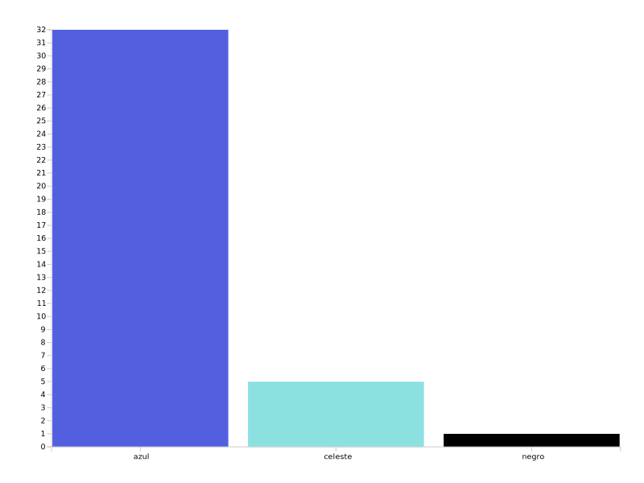
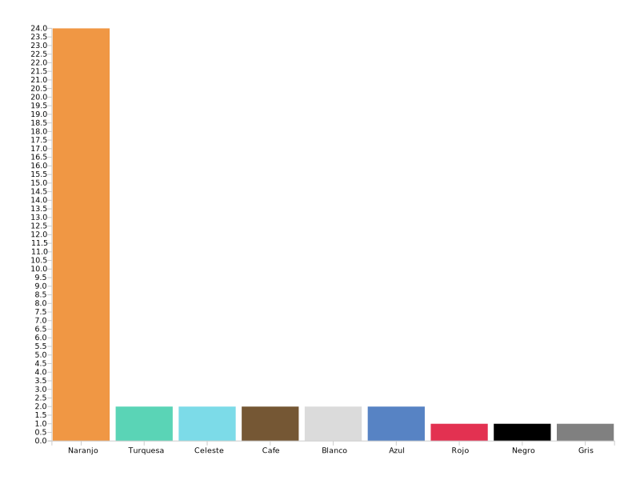
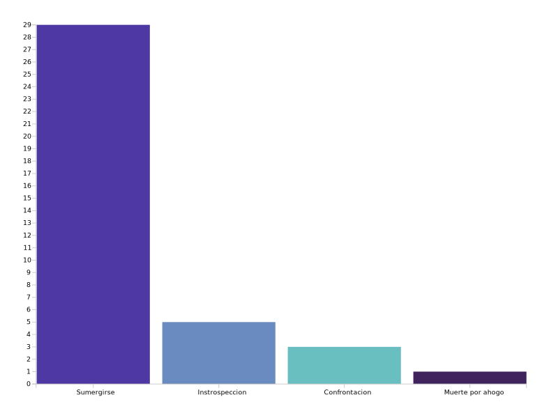
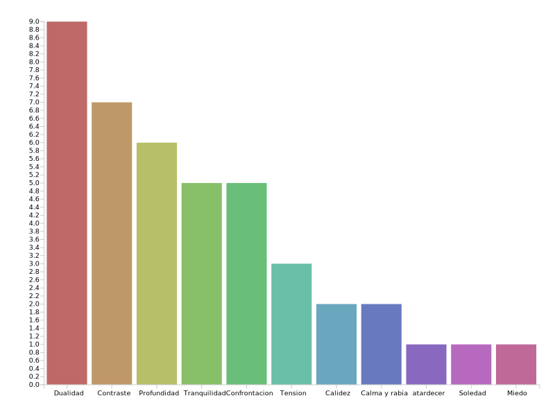
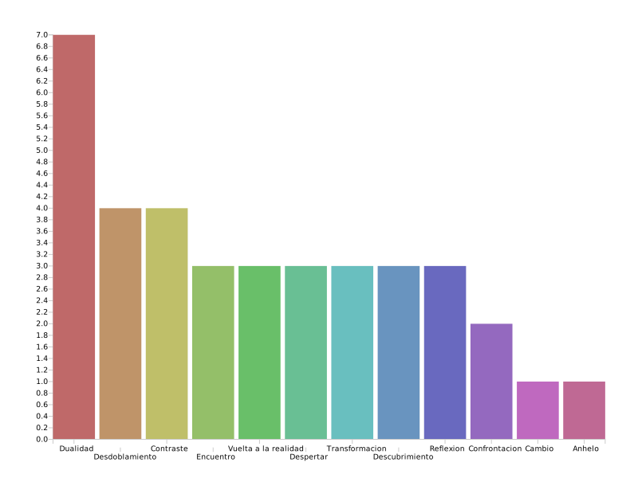

La matriz de análisis que se utilizó para caracterizar cada escena de animación escogida está basada en aspectos del color como las propiedades del color y sus significados culturales, cuya teoría está basada en el sitio web www. proyectacolor.cl. En cuanto a las propiedades del color, se indican los matices, luminosidad y saturación propios de la escena analizada, luego un tipo de armonía de color que se identificó en la escena, se señalan el color que es más frecuente en la escena, un color que tiene una frecuencia media y uno que tenga una presencia menor. Luego se indican los significados culturales de dos colores que se destacan en la escena, estos significados definidos por convención que se han instaurado a lo largo del tiempo en nuestra sociedad, estas definiciones también son basadas en el sitio www. proyectacolor.cl. A continuación se muestra una matriz de ejemplo, con la que se analizó una escena de la película Ghost in the Shell:
La matriz de análisis que se utilizó para caracterizar cada escena de animación escogida está basada en aspectos del color como las propiedades del color y sus significados culturales, cuya teoría está basada en el sitio web www. proyectacolor.cl. En cuanto a las propiedades del color, se indican los matices, luminosidad y saturación propios de la escena analizada, luego un tipo de armonía de color que se identificó en la escena, se señalan el color que es más frecuente en la escena, un color que tiene una frecuencia media y uno que tenga una presencia menor. Luego se indican los significados culturales de dos colores que se destacan en la escena, estos significados definidos por convención que se han instaurado a lo largo del tiempo en nuestra sociedad, estas definiciones también son basadas en el sitio www. proyectacolor.cl. A continuación se muestra una matriz de ejemplo, con la que se analizó una escena de la película Ghost in the Shell:
¿qué color predomina en el video?.
En esta pregunta se ve una gran mayoría de respuestas en las que señalan el azul como color predominante, la segunda mención es celeste por lo que no se ve una gran variación ya que estos colores pertenecen a un matiz cercano, como una mención aislada una persona respondió negro que tendría relación con áreas más oscuras que se observan en la escena.
¿Qué otro color destaca?.
En esta pregunta se menciona como segundo color predominante ( COLOR TÓNICO) al naranjo en una gran mayoría, esto puede establecer que la gran parte de los encuestados identificó dos colores principales que son contrastantes y se presentan de manera casi equilibrada aunque el azul sigue siendo el dominante. El resto de las menciones no indican datos relevantes ya que son muy diversas y escasas, y se relacionan con los tonos azules del color principal de la escena y colores relacionados con luces y sombras..
“Describe lo que pasa en la escena en términos generales”.
Independiente de si los encuestados vieron o no la película, la gran mayoría de estos pudo entender que la acción principal de la escena tiene que ver con el sumergimiento de un personaje dentro de un contexto acuático, la segunda mayor cantidad de respuestas hablaron acerca de estados más psicológicos que se relacionan con la introspección, otros se centraron en partes más específicas de la escena hacia al final de ésta en donde se expresa una situación de confrontación..
“¿Qué te evocan los colores de esta imagen? (Sólo tomando en cuenta la imagen)”.
En esta pregunta se puede observar una mayor cantidad de respuestas que mencionan distintas sensaciones con una importancia similar, sin embargo se puede definir una tendencia en respuestas que hablan de conceptos como dualidad, contraste, confrontación y calma/rabia, una segunda tendencia se puede definir con conceptos que tienen que ver con tranquilidad, profundidad, soledad, en tercer lugar y de manera más mínima se encuentran conceptos como tensión y miedo.
“Tomando en cuenta los colores ¿Cómo interpretas la escena completa?”
En cuanto a la elaboración de una interpretación más reflexiva de parte de los encuestados, lo que más destaca es el concepto de dualidad que se puede relacionar con las menciones de los colores predominantes de la escena (azul y naranjo), también los conceptos que se mencionan tratan de dar una interpretación del estado mental del personaje que es manifestado a través de su entorno y los colores que son contenidos en éste, dentro de estos conceptos están desdoblamiento, reflexión, transformación, descubrimiento, despertar, encuentro.